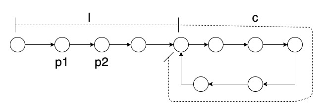

Given a linked list, determine if it has a cycle in it.
使用两个指针，一个每次走两步，一个每次走一步，如果一段时间之后这两个指针能重合，那么链表就存在环了。 但是，这不是一个充要条件，两个指针相遇，我们可以通过反证法轻易证明链表存在环；链表存在环，两个指针就一定会相遇吗？

现在就来证明一下吧。
如图，我们记环开始前的距离为 l，环长为 c, p1 前进的距离为 f1(t)，p2 前进的距离为 f2(t)，t 表示时间。
要证明两个指针相遇，等价于证明：
存在正整数 t 和 n，使得
f2(t) - f1(t) = n * c，且f2(t) - f1(t) >= l，其中f2(t) = 2 * tf1(t) = t
当 c >= l 时，取 t = c， n = 1 即可满足上述命题；
当 c < l 时，取 t = ceil(l / c) * c， n = ceil(l / c)，其中 ceil表示向上取整， 即可满足上命题
# Definition for singly-linked list.
class ListNode:
def __init__(self, x):
self.val = x
self.next = None
class Solution:
def hasCycle(self, head: ListNode) -> bool:
if not head or not head.next:
return False
p1, p2 = head, head.next
while not (p1 is p2) and (p2 and p2.next and p2.next.next):
p1 = p1.next
p2 = p2.next.next
if p1 is p2:
return True
return False